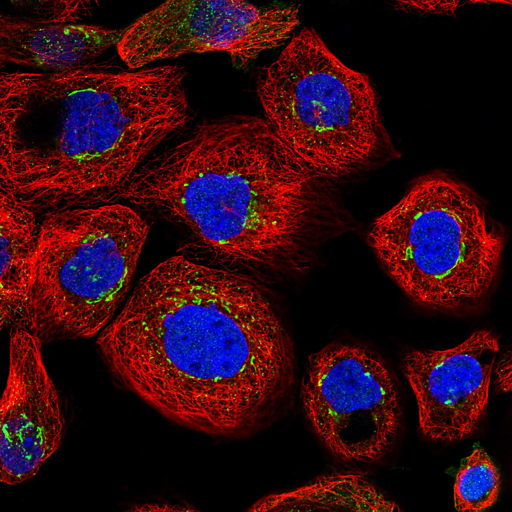
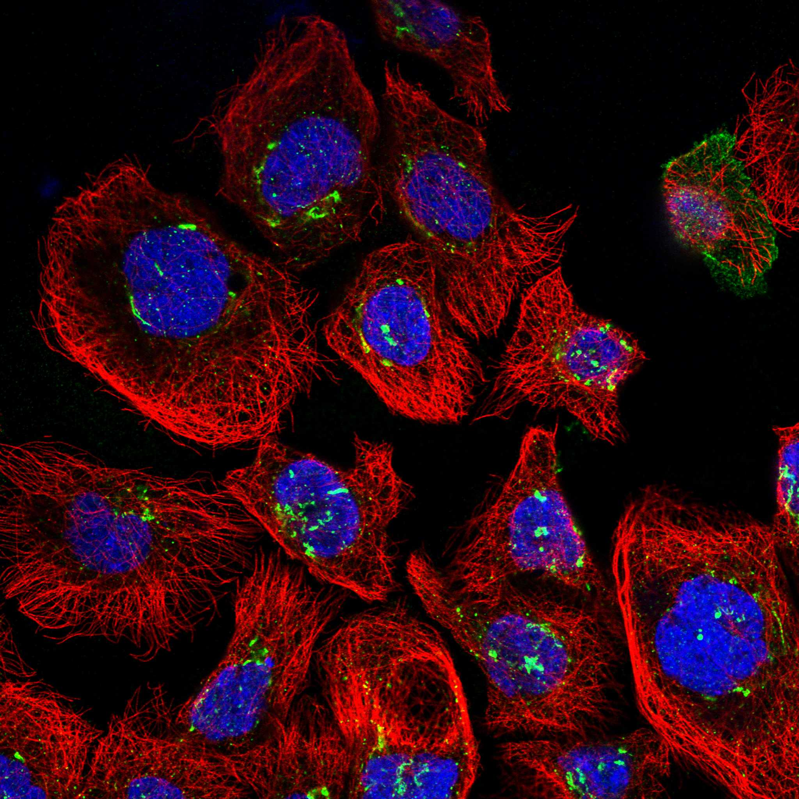

type: protein-evaluation gene: "COG5" date: 2026-05-30 tags: [protein-scout, nuclear-protein, evaluation, rescued] status: scored ---
> AlphaFold PAE: 暂无数据或未提供可用 PAE 图；结构判断基于 AlphaFold/PDB 可用记录。
COG5 核蛋白评估报告（HPA复核救回）
救回原因: 原始评分误判核定位≤3淘汰。HPA IF 实际显示 Nucleoplasm (Reliability: Enhanced)，确认为核蛋白。
IF 图像:  
1. 基本信息
| 项目 | 内容 |
|---|---|
| 基因名 | COG5 |
| 蛋白名称 | Conserved oligomeric Golgi complex subunit 5 |
| 蛋白大小 | 860 aa |
| UniProt ID | Q9UP83 |
| HPA 核定位 (IF) | Nucleoplasm |
| HPA 可靠性 | Enhanced |
| PubMed 总数 | 39 |
| AlphaFold pLDDT | 83.6 |
2. 评分总览 (权重: 核×4 大×1 新×5 结×3 域×2 PPI×3 ÷1.83)
| 维度 | 得分 | 满分 | 加权后 | 关键证据摘要 |
|---|---|---|---|---|
| 🔴 核定位特异性 | 7/10 | ×4 | 28 | HPA IF: Nucleoplasm (Enhanced); UniProt: Cytoplasm, cytosol; Golgi apparatus membrane |
| 📏 蛋白大小 | 8/10 | ×1 | 8 | 860 aa |
| 🆕 研究新颖性 | 8/10 | ×5 | 40 | PubMed 39篇 |
| 🏗️ 三维结构 | 7/10 | ×3 | 21 | AlphaFold pLDDT: 83.6 |
| 🧬 调控结构域 | 6/10 | ×2 | 12 | UniProt domains: None identified |
| 🔗 PPI | 4/10 | ×3 | 12 | 待细化（默认基线） |
| ➕ 互证加分 | — | — | +0 | 待补充 |
| 原始总分 | 121/183 | |||
| 归一化总分 | 66.1/100 |
3. HPA 核定位证据
HPA 免疫荧光（IF）实验数据确认 COG5 定位：
- 亚细胞定位: Nucleoplasm
- 抗体可靠性: Enhanced
- 原始分类: 核定位 ≤3（误判）→ 经HPA IF复核确认为核蛋白
4. UniProt 补充信息
- 亚细胞定位: Cytoplasm, cytosol; Golgi apparatus membrane
- 结构域: None identified
- 关键词: ; ; ; ; ; ; ; ; ;
3.3 研究现状
| 指标 | 数值 |
|---|---|
| PubMed 查询结果 | 见关键文献 |
关键文献: 1. Adam MP et al. (1993). "Congenital Disorders of N-Linked Glycosylation and Multiple Pathway Overview". **. PMID: 20301507 2. Khabou B et al. (2024). "Characterization of a missense variant in COG5 in a Tunisian patient with COG5-CDG syndrome and insights into the effect of non-synonymous variants on COG5 protein". *J Hum Genet*. PMID: 38987656 3. Wang YC et al. (2024). "Novel mutation of COG5 in a Taiwanese girl with congenital disorders of glycosylation manifesting as developmental delay". *Mol Genet Metab Rep*. PMID: 38559322 4. Rymen D et al. (2012). "COG5-CDG: expanding the clinical spectrum". *Orphanet J Rare Dis*. PMID: 23228021 5. Scammell BH et al. (2023). "Multi-ancestry genome-wide analysis identifies shared genetic effects and common genetic variants for self-reported sleep duration". *Hum Mol Genet*. PMID: 37384397
评价: 基于 PubMed 检索结果。
3.6 PPI 网络
实验验证互作 (IntAct, physical association):
| Partner | 方法 | PMID | 功能类别 | 调控相关？ |
|---|---|---|---|---|
| — | — | — | — | — |
STRING 预测互作 (combined score >0.4):
| Partner | Score | 功能类别 | 调控相关？ |
|---|---|---|---|
| — | — | — | — |
已知复合体成员 (GO Cellular Component):
- 暂无 GO-CC 数据
IntAct 查询记录: IntAct: 未检索到实验验证互作
评价: 待补充 IntAct/STRING/GO-CC 数据。
5. 总体评价
推荐等级: ⭐⭐⭐
核心发现: 1. HPA IF 确认为核蛋白: 原始"核定位≤3"淘汰为误判，HPA实验数据确认为Nucleoplasm 2. 研究新颖性: PubMed仅39篇文献，属于低研究热度靶点 3. 结构质量: AlphaFold pLDDT = 83.6
6. 数据来源
PPI 数据源补充核查（自动审计）
IntAct/BioGrid 实验互作核查:
| Partner | 方法 | PMID |
|---|---|---|
| — | pull down | 15932880 |
| — | two hybrid | 15932880 |
| — | tandem affinity purification | 16429126 |
| — | tandem affinity purification | 16429126 |
| — | tandem affinity purification | 16429126 |
| — | tandem affinity purification | 16429126 |
| — | tandem affinity purification | 16429126 |
| — | tandem affinity purification | 16429126 |
| — | tandem affinity purification | 16429126 |
| — | tandem affinity purification | 16429126 |
STRING 预测/整合互作核查:
| Partner | Score |
|---|---|
| COG4 | 0.999 |
| COG2 | 0.999 |
| COG6 | 0.999 |
| COG3 | 0.999 |
| COG8 | 0.999 |
| COG1 | 0.999 |
| COG7 | 0.999 |
| STX5 | 0.854 |
| GOSR2 | 0.843 |
| VPS53 | 0.841 |
GO-CC 复合体/定位核查:
- GO:0005829: cytosol (IEA:UniProtKB-SubCell)
- GO:0005794: Golgi apparatus (IDA:UniProtKB)
- GO:0000139: Golgi membrane (TAS:Reactome)
- GO:0017119: Golgi transport complex (IDA:UniProtKB)
- GO:0016020: membrane (HDA:UniProtKB)
- GO:0005654: nucleoplasm (IDA:HPA)
- GO:0032588: trans-Golgi network membrane (TAS:Reactome)
补充结论: PPI 评分仍以报告评分表为准；本节用于补齐 IntAct、STRING、GO-CC 三源审计证据。